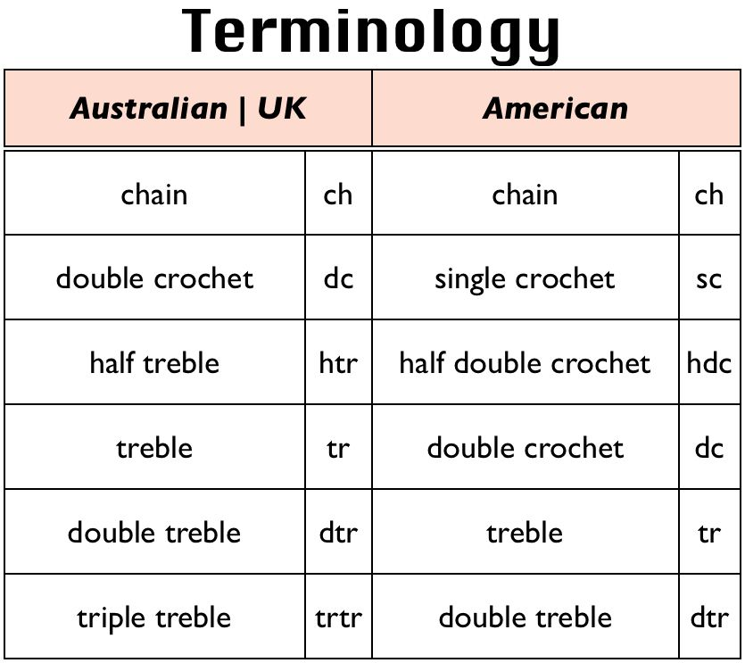

With hundreds of different crochet stitches, it is important to be able to recognise them when reading crochet pattern templates. All crochet stitches are abbreviated, making templates quite difficult to read for beginners. This is why it is important to memorize the basic crochet abbreviations, which makes life so much easier. Keep in mind that US terminology and UK terminology differ greatly, as many vintage stitch patterns are written in UK terminology. it is recommended that one memorized a few UK terms as well.
